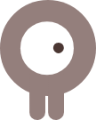
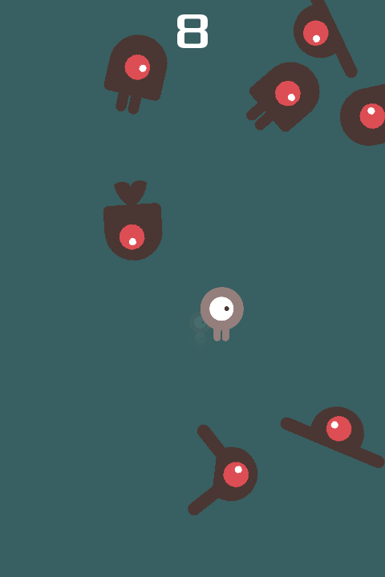

01 — MOVETE

No te quedes quieto
Tu personaje va hacia donde lo muevas. Elegí una dirección y escapá.
Hice un juego con una regla simple: si te quedás quieto, te atrapan. Corré, esquivá y tratá de sobrevivir todo lo que puedas.
CONTROLES SENCILLOS. REFLEJOS A PRUEBA.
Dodge the Creepers es mi juego arcade de supervivencia hecho con Godot. Vos manejás al personaje en el medio de la arena, mientras los creepers se acercan desde todos lados.
Movete, buscá espacios libres y tratá de sumar segundos. Parece fácil hasta que la pantalla se llena de enemigos.
Tres ideas para durar un poco más:

Tu personaje va hacia donde lo muevas. Elegí una dirección y escapá.
Observá sus movimientos y buscá un espacio libre antes de que te rodeen.
Intentá de nuevo y aguantá un poco más. Cada segundo cuenta.
Lo hice en Godot explorando cómo darle vida a cada partida: mover al personaje, sumar enemigos a la arena y encontrar el equilibrio para que el desafío sea divertido.
Los creepers ya están en la arena. ¿Cuánto tiempo vas a aguantar?
Intentarlo de nuevo